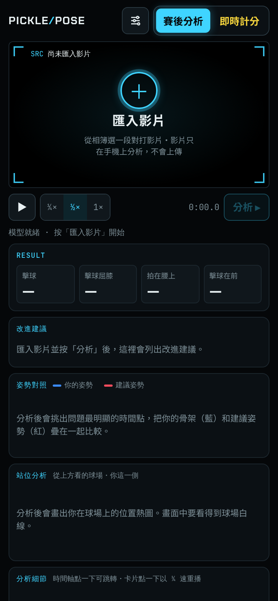
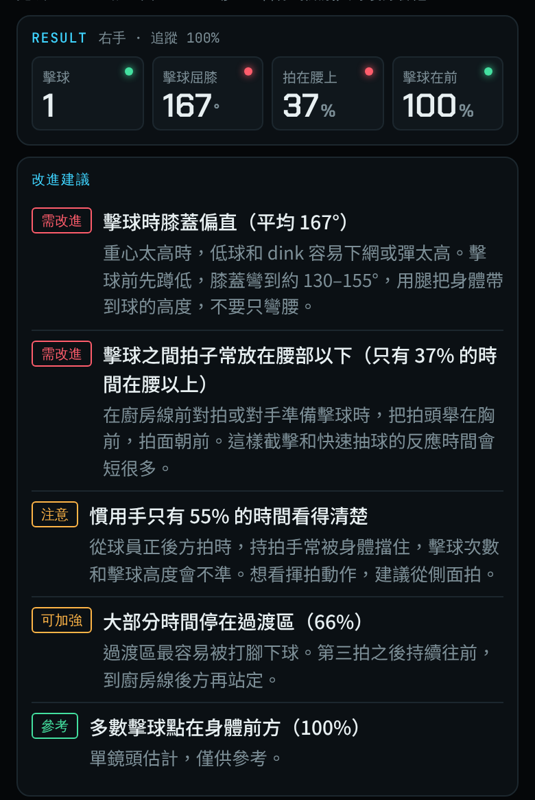
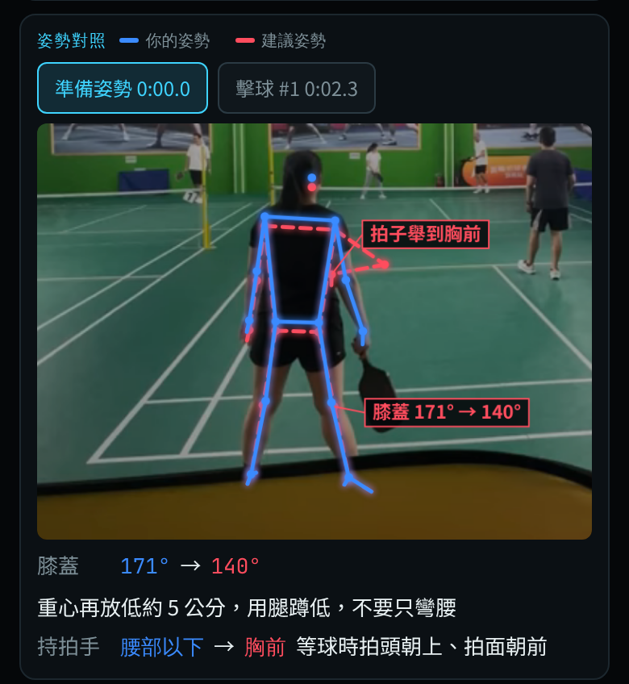
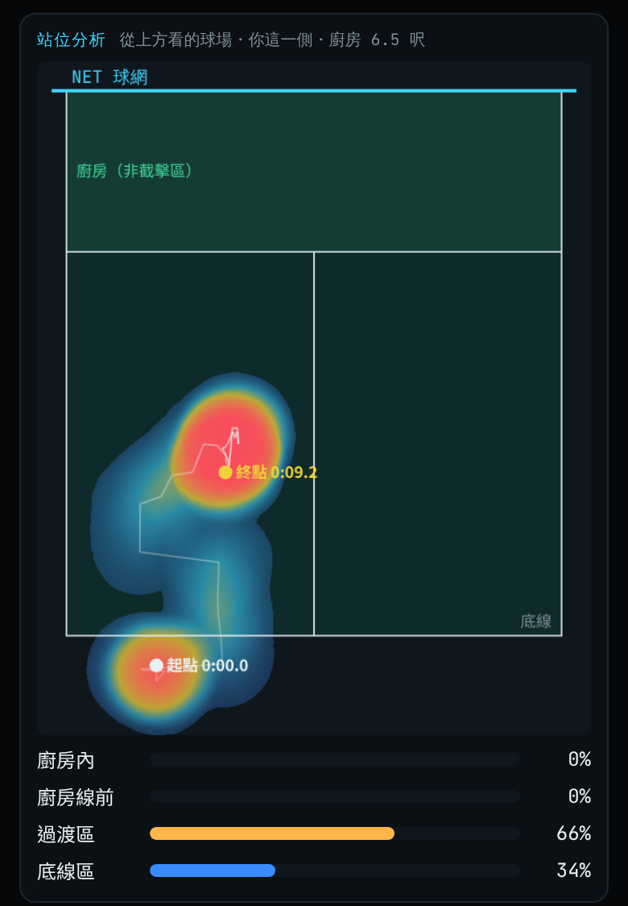
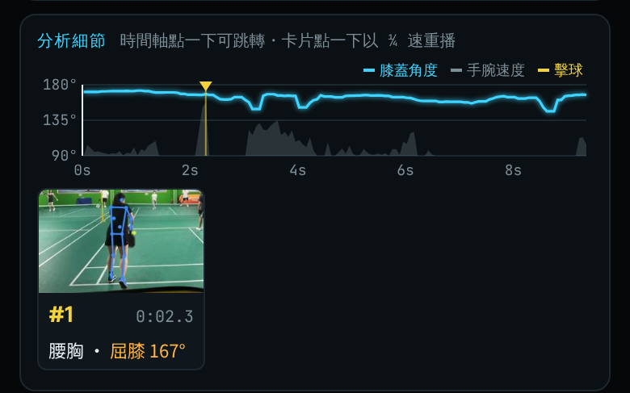
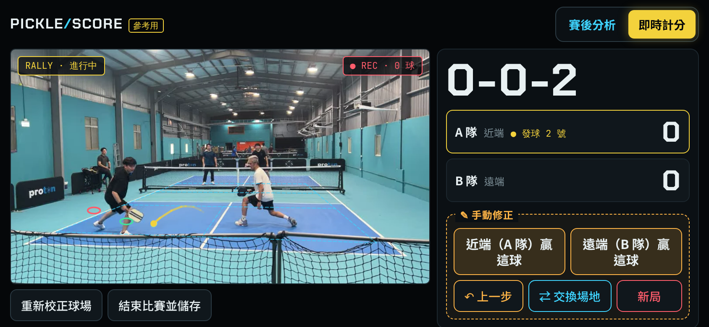
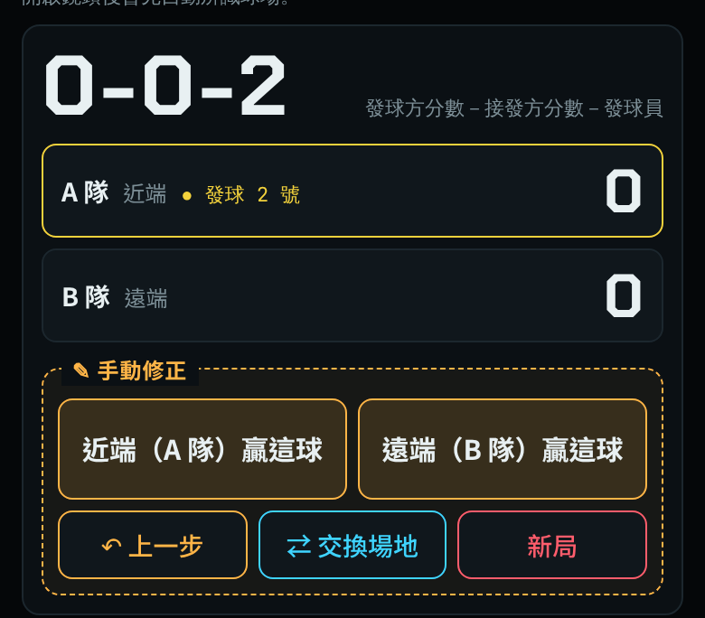
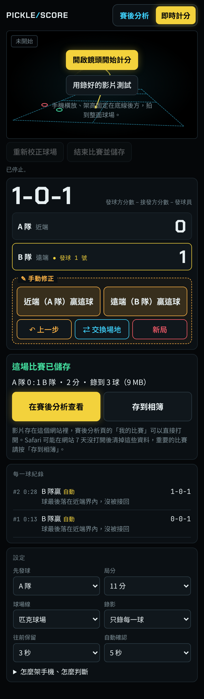
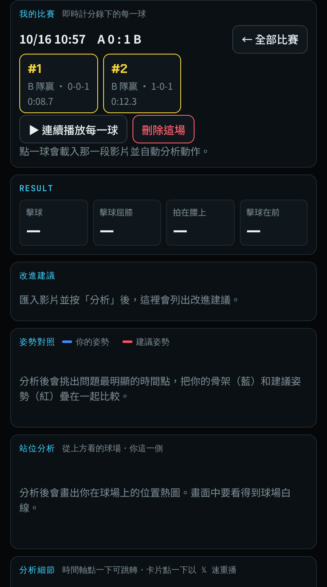

用 iPhone 的瀏覽器就能使用：錄好的影片做「賽後分析」，看動作和站位哪裡可以改進；比賽時用手機鏡頭「即時計分」，並自動錄下每一球。

兩個頁面右上角都有同一組切換鈕：
點另一個名稱就會切換頁面。
匯入一段影片，系統會用 AI 找出球員的骨架，分析擊球、屈膝、準備姿勢與站位，並給出改進建議。
| 想看什麼 | 手機放哪裡 | 說明 |
|---|---|---|
| 揮拍動作 | 球員側面，高度約腰到胸 | 最能看出屈膝、擊球點；建議的紅色骨架差異也最明顯 |
| 站位與移動 | 底線後方、架高 | 要拍到球場白線，才能畫出站位熱圖 |
| 通用 | 橫拍、固定不動 | 1080p、每秒 60 格；片段 3 分鐘以內較順；球員要全身入鏡 |

| 項目 | 意思 |
|---|---|
| 擊球 | 偵測到幾次擊球 |
| 擊球屈膝 | 擊球時膝蓋的平均角度。站直約 175°，建議 130 到 155° |
| 拍在腰上 | 擊球之間，拍子在腰部以上的時間比例 |
| 擊球在前 | 擊球點在身體前方的比例（單鏡頭估計，僅供參考） |
右上角的小圓點：● 做得好、● 可加強、● 需改進。
依重要程度排序：需改進 → 注意 / 可加強 → 參考 / 做得好。每條建議都有具體的改法。



用手機鏡頭邊錄邊算：系統自動找球、判斷每一球誰贏，用雙打傳統計分（只有發球方能得分，0-0-2 開局）。


4-2-1 ＝ 發球方分數－接發方分數－第幾號發球員。
正在發球的隊伍外框是黃色，並顯示「● 發球 1 號／2 號」。
| 近端／遠端贏這球 | 直接手動計分，隨時可用 |
| ↶ 上一步 | 取消上一分 |
| ⇄ 交換場地 | 兩隊換邊時按，系統會記得哪一隊在近端 |
| 新局 | 儲存目前這局，開始新的一局 |
近端＝靠近手機的那一邊；遠端＝球網另一邊。
| 設定 | 選項 | 說明 |
|---|---|---|
| 先發球 | A 隊／B 隊 | 第一分還沒打之前改，立刻生效 |
| 局分 | 11／15／21 分 | 領先 2 分才算贏 |
| 球場線 | 匹克球場／羽球場改打 | 依場地選擇，球場辨識會比較穩定 |
| 錄影 | 只錄每一球／不錄影 | 見第 04 章 |
| 往前保留 | 1／3／5 秒（預設 3 秒） | 每一球的影片從偵測到球之前幾秒開始錄 |
| 自動確認 | 5 秒／8 秒／不自動 | 自動判斷跳出後，等多久自動確認 |


| 情況 | 結果 |
|---|---|
| 發球方贏這球 | 發球方加 1 分，同一位繼續發球 |
| 發球方輸，目前是 1 號 | 換隊友（2 號）發球，不加分 |
| 發球方輸，目前是 2 號 | 換對方發球（side out），從 1 號開始 |
| 開局 | 0-0-2：先發球的隊只有一次發球權 |
| 獲勝 | 先到局分（11／15／21）且領先 2 分 |
| 最後落地 | 判斷 |
|---|---|
| 某一邊的界內 | 那一邊沒接回 → 那一邊輸（打下網的球也會掉在自己這邊） |
| 某一邊的界外 | 對面打出界 → 那一邊贏 |
| 沒看到落地 | 請使用者手動選 |
| 問題 | 怎麼辦 |
|---|---|
| 網站更新了，手機看到的還是舊版 | 往下拉重新整理；從主畫面開啟的話，把 App 滑掉再重開 |
| 匯入影片後沒反應 | 等狀態列從「讀取影片中」變成「分析中」；超過 10 秒沒動，重新整理再匯入一次 |
| 姿勢對照的紅色骨架看不太出來 | 從背後拍時差異本來就小，改從側面拍 |
| 沒有站位分析 | 畫面要拍到球員那一側的球場白線 |
| 即時計分沒畫出青色球場線 | 確認整面場入鏡、手機架穩，在設定選對「球場線」類型，按「重新校正球場」 |
| 一直沒偵測到球、或判斷常錯 | 手機架高一點；球要是黃色或黃綠色；判錯就用「改判」或手動修正區 |
| 發球前拍球被當成一球 | 太短的會自動忽略；若跳出判斷，手動選或按「上一步」 |
| 手機很燙 | 拆殼、避開陽光、不要邊充電邊用、可加散熱夾；iPhone 過熱時會降低鏡頭張數，嚴重時相機會停止（已存的球不會不見） |
| 錄好的比賽不見了 | Safari 可能清掉 7 天沒打開的網站資料；重要比賽請馬上「存到相簿」，並把網站加入主畫面 |